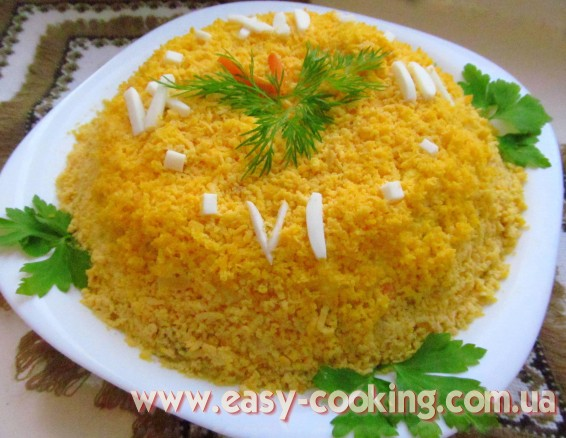
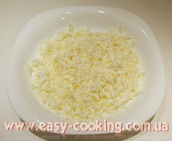

Салат “Мімоза”

Популярний на пострадянському просторі майонезний салат з рибною консервою та вареними яйцями.
Інгредієнти
- 250 г картоплі
- 200 г моркви
- 4 яйця
- 1 баночка рибної консерви
- 1 цибулина
- майонез
Приготування
Спочатку відварюємо до готовності моркву, картоплю та яйця. Консерву для салату беремо таку, яку любимо. Я брала тунця, бо у нас ніхто дуже не любить жирної риби.
Усі продукти на салат натираються на дрібній терці окремо один від одного. Тут у мене не зовсім відповідає дійсності, бо я, чесно кажучи, замріялася і натерла білки та картоплю на крупній терці, хоча результат все одно вийшов класний.
Я зустрічала багато різних варіантів цього салату – з яблуками, з сиром, різна послідовність шарів. У деяких варіантах додатково присутній ще шар натертих яблук – якби додавала, то напевно на цибулю :). Щодо послідовності шарів салату, то мені найбільше подобається складати салат таким чином:

Спочатку натерті білки, зверху майонез.
Тоді – рибна консерва, знову змастити майонезом.
За тим – подрібнена цибуля. Я люблю, коли рибка поруч із цибулею.
Попередньо порізану цибулю можна обдати кип’ятком, щоб зняти гіркоту.
Наступним іде шар натертої моркви.
Тоді – натерта картопля, змащуємо майонезом, можна посолити.
Зверху натріть варені жовтки і прикрасіть зеленню. Смачного!